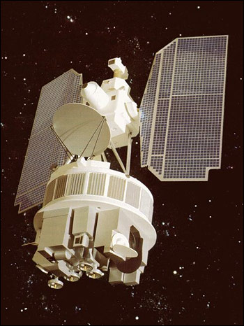

Simulation de sondeurs atmosphériques historiques
Modélisation du transfert radiatif pour la réanalyse ERA5 — satellites Nimbus, NOAA (années 1970–1990)

Rendu 3D du satellite Nimbus, l'une des plateformes étudiées dans ce projet.
Contexte & Objectifs
Le service Copernicus sur le changement climatique (C3S) vise à fournir des données climatiques cohérentes et de haute qualité sur le long terme. La réanalyse ERA5 couvre l'atmosphère depuis 1940, mais l'intégration des observations satellitaires des années 1970–1990 pose un défi majeur : les instruments embarqués sur ces satellites anciens ne disposent pas de modèles de simulation à jour compatibles avec les outils modernes de transfert radiatif.
Objectif principal
Simuler le comportement de sondeurs atmosphériques historiques (PMR, SCR, SSU) à l'aide des outils modernes LBLRTM et RTTOV, afin de permettre leur assimilation dans la réanalyse ERA5 et d'étendre la couverture climatique de C3S.
Satellites & Instruments étudiés
Ces instruments sondent la haute stratosphère (jusqu'à ~55 km) via l'absorption dans les bandes CO₂. Leur particularité : l'utilisation de cellules de gaz à pression variable pour moduler la fonction de réponse spectrale (SRF).
Pipeline Méthodologique
Un point clé de la méthode est la prise en compte du balayage Doppler du PMR : le déplacement du satellite induit un décalage fréquentiel (effet Doppler) qui déplace la SRF et doit être intégré dans la simulation pour restituer fidèlement les mesures.
Conclusions & Perspectives
- LBLRTM permet de simuler fidèlement les cellules CO₂ des instruments PMR, SCR et SSU.
- Les instruments PMR, SCR & SSU sondent effectivement la haute stratosphère.
- Le balayage Doppler doit impérativement être pris en compte dans la simulation du PMR.
- Extension du jeu de profils atmosphériques pour couvrir une plus grande variabilité climatique.
- Ajustement de la résolution verticale des profils.
- Génération des coefficients RTTOV pour SCR & SSU afin de compléter la chaîne d'assimilation.
Présentation Assemblée Générale
Les résultats de ce projet ont été présentés lors de l'Assemblée Générale C3S. La présentation détaille les principes de mesure, les fonctions de réponse spectrale et les fonctions de pondération des différents instruments.
Voir la présentation AG